01
Descubrir
Conocer la montaña y entender qué significa caminarla.
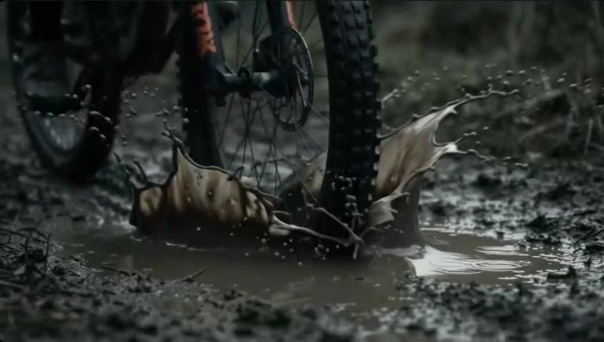
Una nueva forma de aprender, explorar y prepararte para la montaña. Un ecosistema donde el hábito se construye caminando.
El punto de partida
Mountain Brothers nace para acompañarte desde ese primer sendero hasta experiencias de montaña cada vez más exigentes.
Aquí la montaña no es un destino que se visita: es un proceso que se construye. Terreno, equipo, seguridad, hábitos y criterio se aprenden en orden, y ese aprendizaje es lo que convierte una caminata en experiencia.
No todos empiezan desde el mismo lugar. Saber dónde estás es la primera decisión inteligente que puedes tomar.
Quiero empezar.
Perfil orientativo
Ya camino y quiero avanzar.
Perfil orientativo
Quiero prepararme para retos mayores.
Perfil orientativo
Quiero convertir una meta en un proceso.
Perfil orientativo
Test del aventurero
Seis preguntas sobre tu experiencia y tu momento actual. El resultado ordena tu punto de partida; no mide capacidades ni reemplaza una valoración profesional.
El test es una experiencia interactiva y necesita JavaScript. El resto de la página funciona sin él.
Un asistente inteligente que entiende tu experiencia, tus objetivos y tu progreso para ayudarte a dar el siguiente paso.
Evalúa tu punto de partida desde lo que ya sabes hacer.
Propone un siguiente paso concreto, no una meta lejana.
Ajusta preparación, equipo y seguridad a tu contexto.
Consulta una base de conocimiento propia de Mountain Brothers.
Convierte tu avance en un progreso visible por dimensiones.
El guía es una demostración con escenarios preparados: necesita JavaScript y no envía nada a ningún servidor. El resto de la página funciona sin él.
Las cinco dimensiones son una vista previa del producto. Los valores se cargan con los escenarios de la demostración y no miden tu condición física.
Tu camino
Seis etapas que se recorren en orden. Ninguna se salta: cada una desbloquea conocimiento, experiencia y criterio para la siguiente.
01
Conocer la montaña y entender qué significa caminarla.
02
Primera experiencia real sobre un sendero, sin exigencias.
03
Técnica, equipo y seguridad: lo que evita los sustos.
04
Más distancia, más desnivel y más altitud, de a poco.
05
Planificación, lectura de terreno y experiencia acumulada.
06
Convertir un objetivo en un proceso largo y consciente.
Meta aspiracional
Sin JavaScript solo se ve la primera foto: el carrusel necesita JS para cambiar de imagen y para pausar el avance automático.
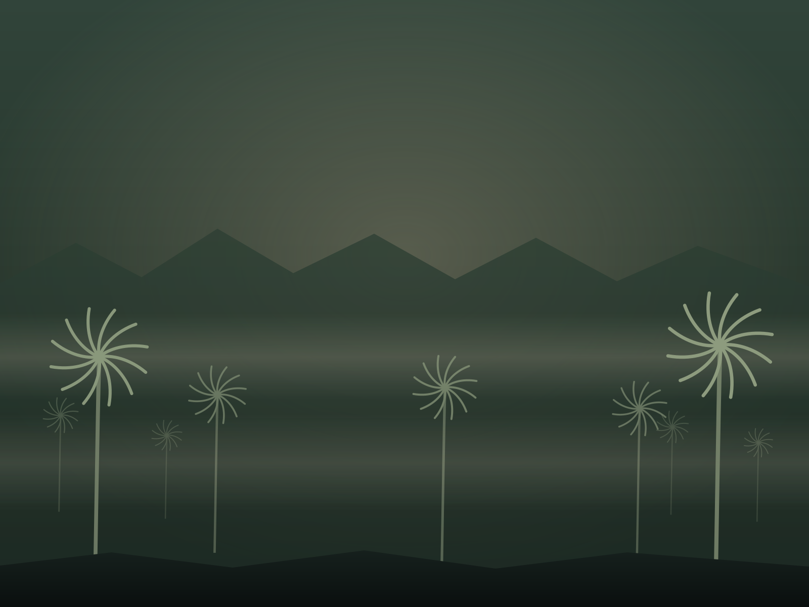
Territorio · Quindío, Colombia
Entre palmas de cera, bosques, páramos y grandes montañas comienza nuestro camino. Este no es un punto de partida decorativo: es el territorio que nos forma.
Recorridos
Recorridos del territorio, en orden de exigencia. Cada uno trae su dificultad, su equipo y sus medidas de seguridad, para que decidas con datos y no solo con ganas.
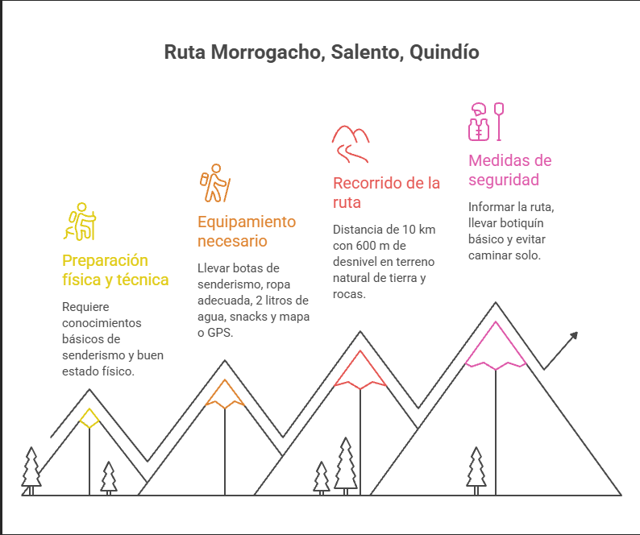
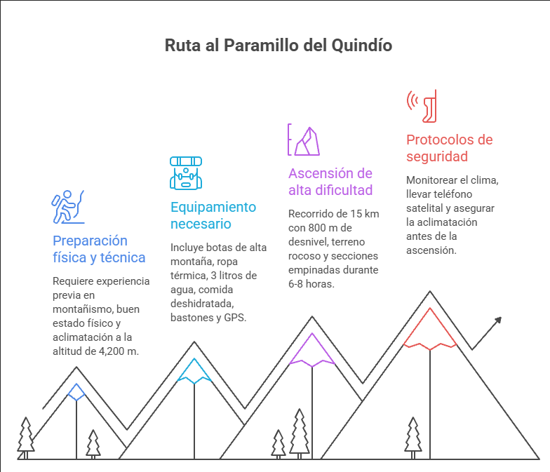
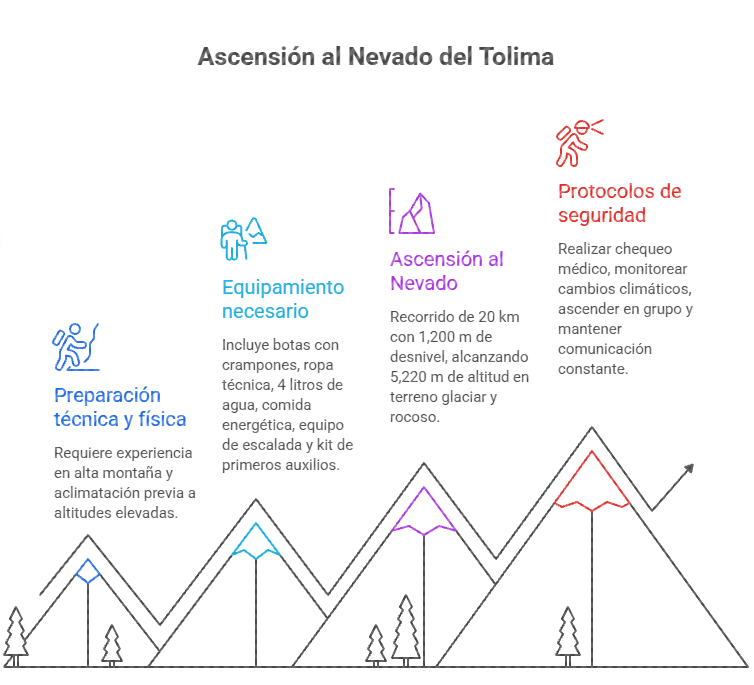
Meta aspiracional. En Mountain Brothers el Nevado del Tolima es el objetivo que se persigue, no una ruta de salida. Esta ficha describe la ascensión para prepararse hacia ella: cualquier intento real requiere preparación verificada, acompañamiento experto y condiciones confirmadas con las autoridades correspondientes.
Datos de referencia. Dificultad, distancia, duración y demás datos de estos recorridos son material aportado para este prototipo: no sustituyen una consulta a guías locales ni a las autoridades de cada área. Las condiciones reales cambian con la temporada; verifica siempre antes de salir.
Experiencias
Cinco formas de avanzar. Cada una alimenta a las demás: lo que aprendes se convierte en experiencia, y la experiencia cambia lo que te atreves a intentar.
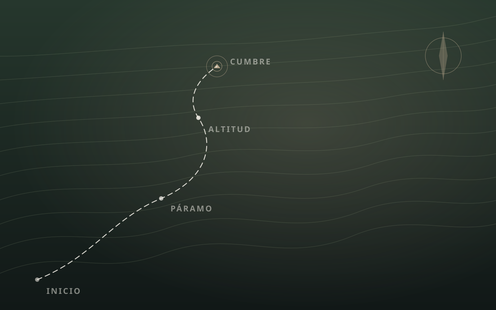
Senderos y naturaleza. Aprende a leer el terreno antes de caminarlo.
Guías y conocimiento. Explicaciones claras, sin tecnicismos innecesarios y sin promesas.
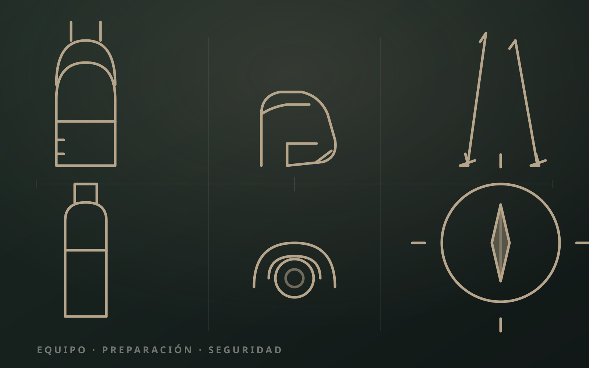
Equipo, planificación y seguridad. Lo que se decide antes de salir sostiene la salida completa.
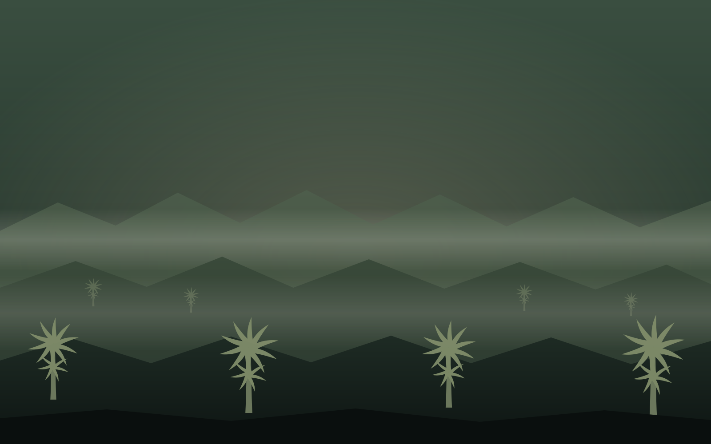
Nuevos lugares. Territorio colombiano contado con criterio y con respeto por quien lo habita.
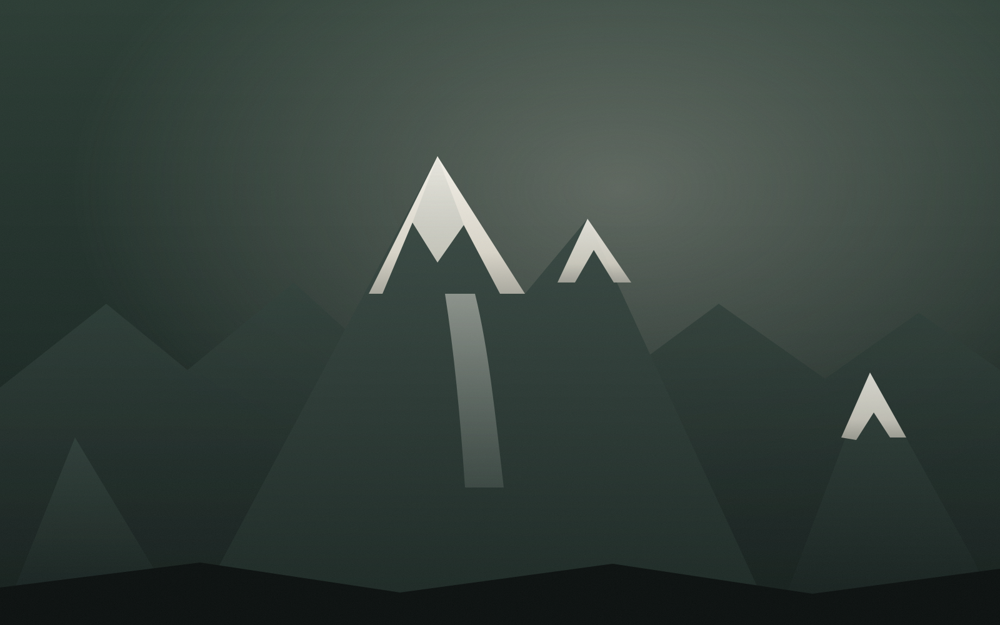
Construye experiencia. Cada salida deja algo aprendido para la siguiente.
Temas ordenados por categoría, escritos en lenguaje claro. Busca por lo que te preocupa hoy, no por lo que se supone que deberías saber.
Vista previa funcional del buscador. En la versión final responderá consultando la Knowledge Base del proyecto: documentos, guías, infografías y podcast.
El catálogo completo y el filtro de categorías necesitan JavaScript. Sin él, el resto de la página sigue funcionando con normalidad.
Una representación del crecimiento, no una lista de logros. Cada etapa desbloquea conocimiento, experiencia, preparación y seguridad.
Comunidad
Nadie debería hacer su primera caminata solo. El progreso es individual, pero se sostiene en compañía: alguien que ya caminó eso y puede contarlo sin exagerar.
Salidas organizadas por nivel, para que nadie camine solo su primera vez.
Espacio para relatos de quienes empezaron sin experiencia y siguen avanzando.
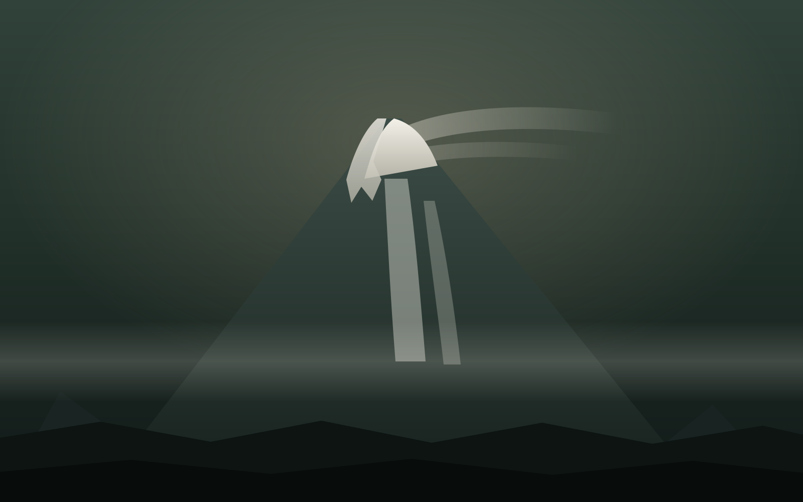
Metas compartidas que se construyen por etapas, no por impulsos.
Grupos por nivel, no por ego: cada quien camina donde puede.
Rutas y experiencias compartidas con información verificada.
Historias reales cuando existan: sin inventar testimonios.
Buenas prácticas siempre: no dejar rastro y cuidar el páramo.
Contenido demostrativo · ejemplos de formato, no testimonios reales
Un programa con voces de montañistas y senderistas: lo que siente el cuerpo, lo que decide el criterio, lo que cambia cuando se camina mucho tiempo. Escucha y mira, sin prisa.
Un relato desde la alta montaña sobre lo que cambia cuando el cuerpo llega a su límite y la mente sigue. No es un manual: es una historia contada con voz propia, con silencios y con ruido de ventisca.
Un corte del registro de alguien subiendo. No es un tutorial: es una mirada al terreno real, al ritmo de la subida y a lo que cambia en el cuerpo a medida que asciende. Muestra, no explica.
Relatos de la Montaña es un programa en construcción. El audio y el video aquí mostrados son demostraciones de formato: no son episodios finales ni testimonios verificados. La alta montaña requiere acompañamiento profesional, condiciones verificadas y decisiones tomadas en el momento.
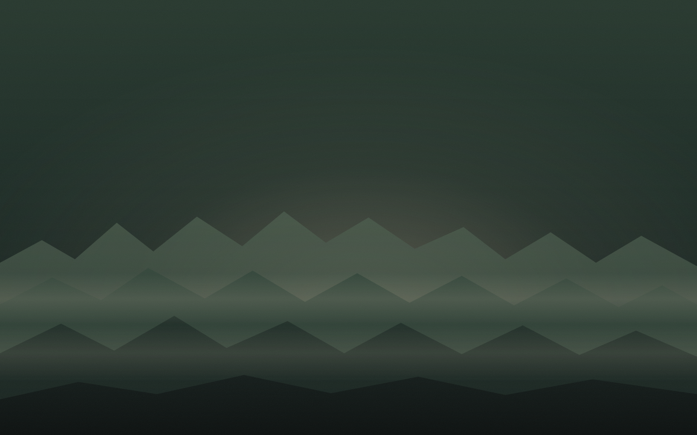
La montaña no empieza en la cumbre. Empieza cuando decides caminar.
Comenzar mi caminoMomentos
Tres miradas breves, grabadas en formato nativo móvil. Se reproducen solas cuando entran en pantalla y se pausan al salir: así se siente la montaña — siempre en movimiento, siempre a tu ritmo.
Reproducción automática inteligente. Los vídeos solo se descargan y reproducen cuando entran en el viewport y se pausan al salir. En dispositivos con prefers-reduced-motion se muestra solo la imagen estática.